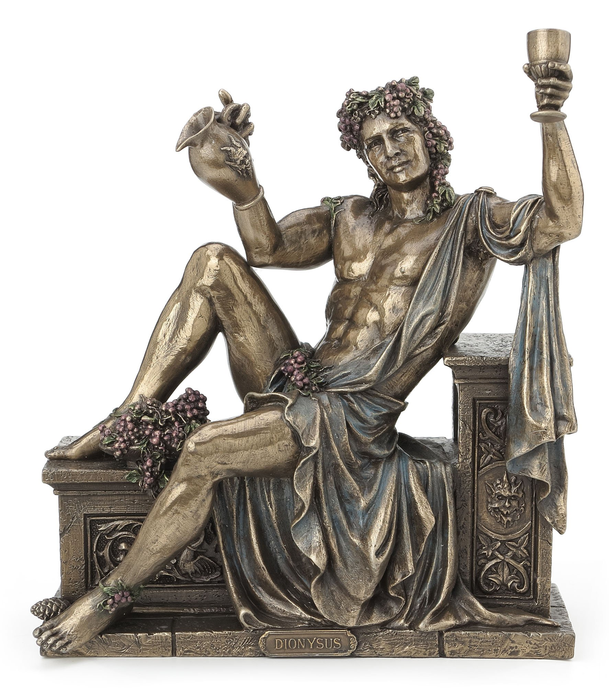
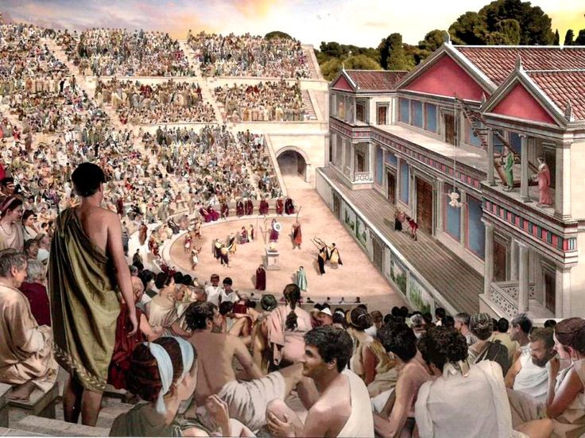
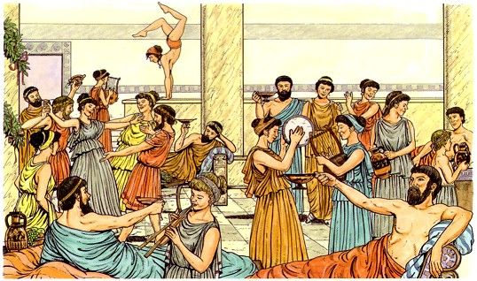
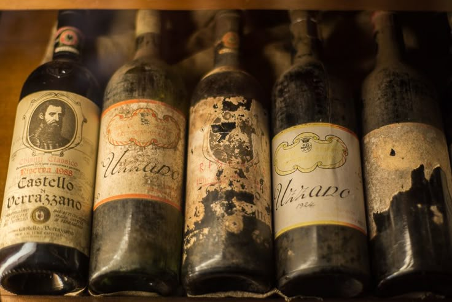
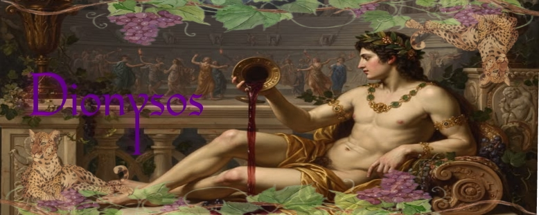
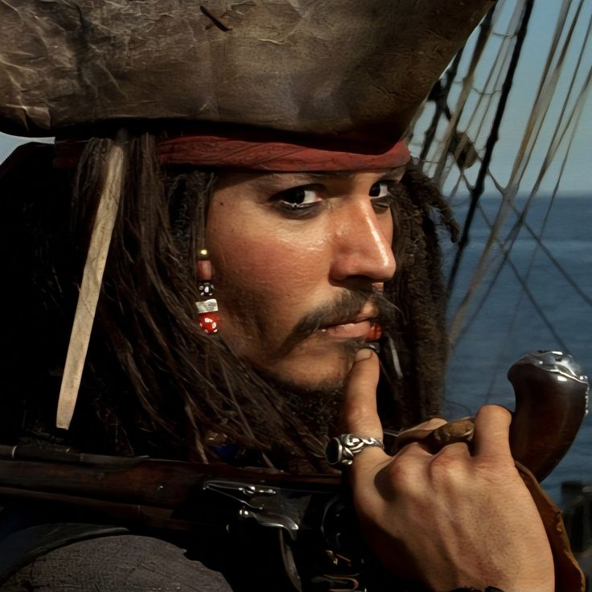
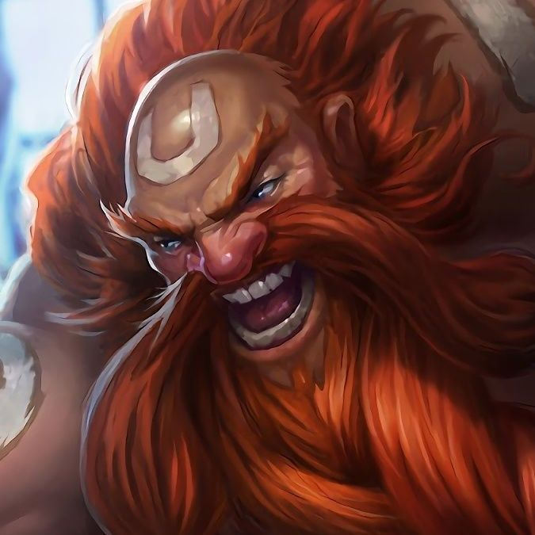
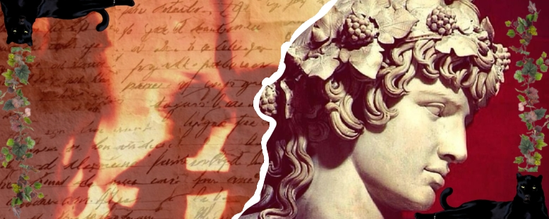

São as fics que as civilizações criaram para explicar babados que não entendem. Um ótimo exemplo é o Zeus, quando raios caiam, os gregos falavam que era o Zeus bravo com algo, mas o deus de quem vou falar nunca ficava bravo, já que sempre estava bêbado demais para isso. Dionísio, deus do vinho, das bebidas, festas e do teatro.
Pra vc entender o hit que foi a mitologia grega, ela hitou tanto que seus inimigos, os romanos, roubaram suas histórias e até sua cultura, por isso muitos confundem as histórias, já que são as mesmas mas com outros nomes.



Dionísio é o Deus do vinho e das festas, ama um teatro e beber uns goro. Ele nasceu duas vezes de acordo com as histórias, um babado fortíssimo, que eu só vou contar em Os babados da vida. Voltando a apresentação, ele foi conhecido como deus da inclusão, pra ele não importava gênero, cor, corpo, ou status social, ele só ligava se a pessoa gostava de beber e festejar, assim como ele. O primeiro protestante das mitologias, slay king!
O nascimento do Didi foi uma loucura: a mãe dele, Semeale, era amante de Zeus, e Hera mandou a coitada pro ralo antes mesmo do bebê virar feto. Para salvar o filho, Zeus costurou o feto na própria coxa e terminou de gestar o menino ali mesmo.
A relação com a madrasta era uó, mas o casamento dele foi o oposto do dos pais: puro loss pra solidão e muito feliz. Ele conheceu a princesa Ariadne depois que ela levou o maior ghosting do "heroi" Teseu em uma ilha deserta, logo após ajudar o cara a solar o Minotauro. Dionísio se apaixonou na hora pela beleza da gata, casou com ela e, pra provar seu amor, lançou a coroa dela ao céu, transformando-a na constelação Coroa Boreal. O homem literalmente deu as estrelas para ela!


Jack Sparrow 𓌜☠︎︎ O ápice da energia dionisíaca. Malemolente, fala arrastada, puro deboche e mestre em escapar de tretas na base do improviso. Vive no mar e deixa todo mundo na dúvida se é um gênio ou se coringou de vez.
Gragas ⚔ O Dionísio dos games. Enquanto o deus viajava espalhando a cultura do vinho, o Gragas roda Runeterra atrás do ingrediente perfeito para a bebida mais potente de todas. Mesma vibe de viver pelo rolê e pelo êxtase.
Aqui vão minhas considerações finais! Obrigada guys por lerem! Caso se interessar por Helenismo, clique aqui e saiba como cultuar, ou apenas descubra mais sobre a religião.